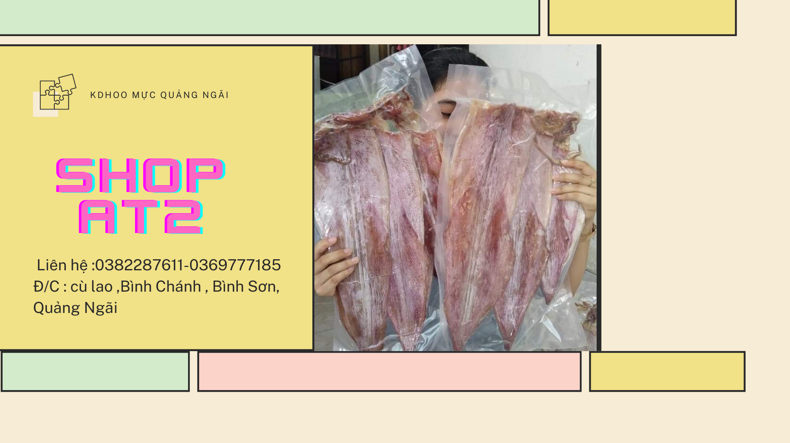

First slide Heading
First slide Caption

Second slide Heading
Second slide Caption

Third slide Heading
Third slide Caption
Welcome To Shop AT2 Wedsite
This is the content for Layout P Tag

Mực Tẩm Gia Vị, Hàng Chuẩn Nhất Toàn Quốc
300.000₫ – 350.000₫
Khô mực thực phẩm được nhiều người ưa chuộng và sử dụng. Đặc biệt với những người hay nhậu thì mực khô là lựa chọn rất phù hợp. Có nhiều cách để chế biến mực khô thành những món ăn độc đáo, ngon miệng. Khô mực là một trong những đồ nhậu được rất nhiều người ưa chuộng, đặc biệt là cánh đàn ông. Cùng tìm hiểu về loại thực phẩm này qua bài viết sau.
Hotline: 0382287611, hỗ trợ khách mua hàng 24/7, giao hàng liền tay.
Mực khô hay còn gọi là khô mực là một món ăn đặc trưng của ẩm thực Việt Nam được chế biến từ nguyên liệu là những con mực bằng phương pháp sấy khô hoặc phơi nắng
Mực khô hay còn gọi là khô mực là một món ăn đặc trưng của ẩm thực Việt Nam được chế biến từ nguyên liệu là những con mực bằng phương pháp sấy khô hoặc phơi nắng
Mực khô hay còn gọi là khô mực là một món ăn đặc trưng của ẩm thực Việt Nam được chế biến từ nguyên liệu là những con mực bằng phương pháp sấy khô hoặc phơi nắng